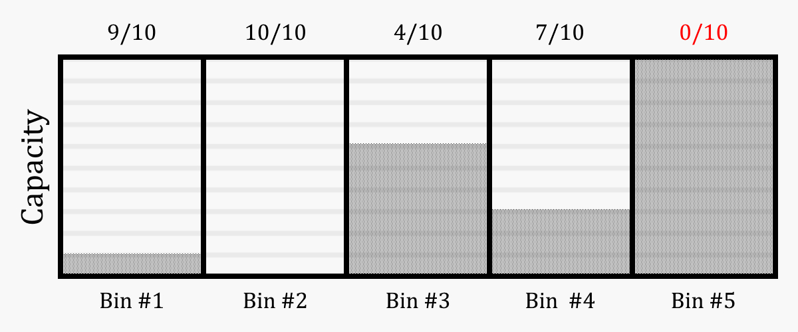

WORK IN PROGRESS
0. Student Details
1. Background and Motivation
Today, cloud service providers like Amazon Web Services (AWS), Google Cloud, Microsoft Azure and more provide computing capacity on demand. A fundamental problem which arises when providing these services is that of mapping requests to physical machines in such a way as to minimise wasted space and maximise the number of requests that can be served given fixed physical infrastructure. This project explores the viability of using deep reinforcement learning to determine a solution for VM mapping problems with the goal of maximising revenue for the cloud service provider.
2. Research Questions
Infrastructure-as-a-service is undeniably a huge industry, and it is estimated that it will continue to grow by 23.2% year-on-year until 2027 (Gaul, 2022). As demand for these services increases, so too will the amount of work required to allocate these requests. Traditionally, these problems have been solved using complex integer linear programming techniques, or one-size-fits-all heuristics like first-fit decreasing (FFD) – I posit that by harnessing recent advances in machine learning, particularly concerning the efficiency of deep Q networks, we can reduce both the complexity of mapping these requests and the amount of space wasted. Harnessing this knowledge could not only improve efficiency at the point of allocation but also enable cloud service providers to tailor their pricing model based on their current capacity to encourage consumer behaviour in line with the optimal policy, which in turn would allow providers to offer more competitive rates.
3. Domain modelling
I chose first to simplify the problem, as machine learning was a totally new domain to me and I wanted to limit the number of moving parts. To this end, I decided to model it as an online 1-dimensional bin packing problem in which we have some number of bins, or containers, each with some non-negative integer capacity.

The goal was to train a reinforcement learning agent to the point where it could assess a given state (I.e., a set of bins with various capacities, and an incoming item to be placed) and determine which action was likely to lead to the highest long-term reward.
From here, I incrementally increased the complexity of the environment bringing it closer to the VM allocation problem. First, I introduced a value associated with each item; the goal now was to maximise the total value contained in each bin by the end of the simulation. From here, I increased the dimensionality of the problem so that both the bins and the items had an x and a y component to their size, meaning the following condition had to be satisfied in order for an item to be placed successfully:
4. Experiments
Bin packing environment
The goal of the first experiment was to increase the accuracy with which items were allocated – that is, minimise the number of misplacements – to demonstrate that a DRL agent was capable of extracting some reward signal from our custom environment and acting on it in such a way as to improve its performance.
To recap, at each timestep in this environment, the agent could attempt to allocate the current item to one of our bins or discard it; as such, the following 3 results were possible:
1. Placed: The object was successfully placed in a bin with sufficient capacity to hold it.
2. Misplaced: The agent attempted to place the object in a bin without sufficient capacity, meaning it was carried over to the next timestep to try again.
3. Discarded: The agent chose to discard the item without attempting to place it.
Each of these outcomes carried its own reward value which I tuned as follows:
1. Constant reward values: The agent receives a reward of +1 for placing an item, and a penalty of -1 for misplacing an item.
2. Linear reward values: The agent receives a reward equal to +(item size) for placing an item, and a penalty of –(item size) for misplacing an item.
3. Asymmetric reward values: The agent receives a reward of +1 for placing an item, and a penalty of -10 for misplacing an item.
Each of these methods was attempted with:
1. No discard penalty.
2. Small discard penalty: Penalty equal to ½ of the misplaced item penalty.
3. Large discard penalty: Penalty equal to the misplaced item penalty.
Knapsack environment
Moving on from the bin-packing environment, I modelled a 1-dimensional knapsack problem where, in addition to size, each item had a value associated with it. The goal in this environment was not only to pack the items efficiently, but in such a way as to maximise the value contained within each bin, or knapsack, by the end of the episode.
VM Allocation environment
This environment is a multi-dimensional version of our knapsack problem, whereby each item (and equally each bin) has multiple dimensions which must be considered when placing:
1. Number of vCPUs.
2. RAM in GiB
3. Storage in GiB
We also store a value for each item as well as a popularity score which is used to inform the distribution of item types as discussed in the problem modelling section.
5. Results
Bin packing environment
To set a baseline, I first developed a stochastic model which would take actions at random in our environment. The results of this control model were then compared to the DRL agent trained using constant reward values with no discard penalty. The results of which can be seen below:
Knapsack environment
It was challenging to balance accuracy in this environment with maximizing the value of each bin; there appeared to be an inverse correlation between these two factors which suggested that the agent was only able to optimize along one dimension. It may be that the attributes of a PPO algorithm which allow it to generalise solutions for complex environments without underfitting may also cause it to overfit certain attributes in the data; specifically, it will latch onto one maxima at the expense of another.
VM Allocation environment
Unfortunately, I was unable to produce results in this environment that improved upon the control run; I suspect that the DRL agent had difficulties learning the correlation between such a complex environment and the reward signal. The below graph shows the similarities between the stochastic model and the trained model, showing almost no variation even after 1,000,000 timesteps.
6. Conclusions
While I was unable to produce results for more complex environments, the success of our agent in the bin packing environment suggests that it should be possible to use deep reinforcement learning to solve such problems. The domain modelling developed as part of this project is a useful contribution to the area; it models the key components of the problem in a way that is easy to intuit and implement as a programmer and allows the agent to assess the full environment state in a straightforward way.
Excellent results were achieved in the 1-dimensional bin packing environment, although there was a clear trade-off between accuracy and efficiency. This makes sense; over a large enough number of steps, we would be guaranteed to generate an item that was ‘just right’, but this behaviour is clearly at odds with a solution that does not waste too many steps and reject too many requests for not being perfect. An interesting approach may be to have an incremental discard penalty which increases by some factor each successive time an item is discarded.
I feel that solving this problem may not be as simple as associating a set reward value for an action without considering the bigger picture. While it is true that it’s the job of the DRL agent to consider long-term reward as well as instant gratification when fine-tuning the model, I would be concerned that our ‘condition-agnostic’ reward values may be making it difficult to converge on a solution in such chaotic environments.